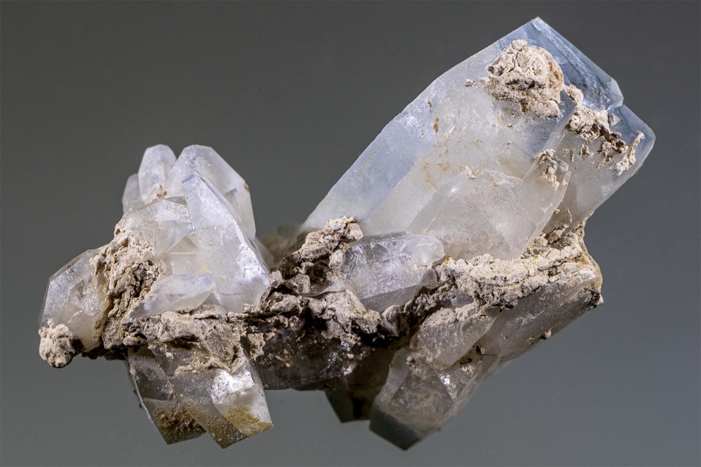

Celestine
"Light Blue Celetine on Limestone"
VI-01537
Bull Creek (Bull Run), Austin, Travis County, Texas, USA
Mined by Blake Barnett
Purchased 4/26/2019 from Red Dog Minerals and Fossils for $70.00
Core Collection • In Collection
Details
Storage Type: Flat
Storage Location: 089 Mixed Dealers Miniatures
Size class: Cabinet (0)
Dimensions: 7.0 × 4.5 × 2.5 cm
Mass: 86 g
Luster: Unrecorded